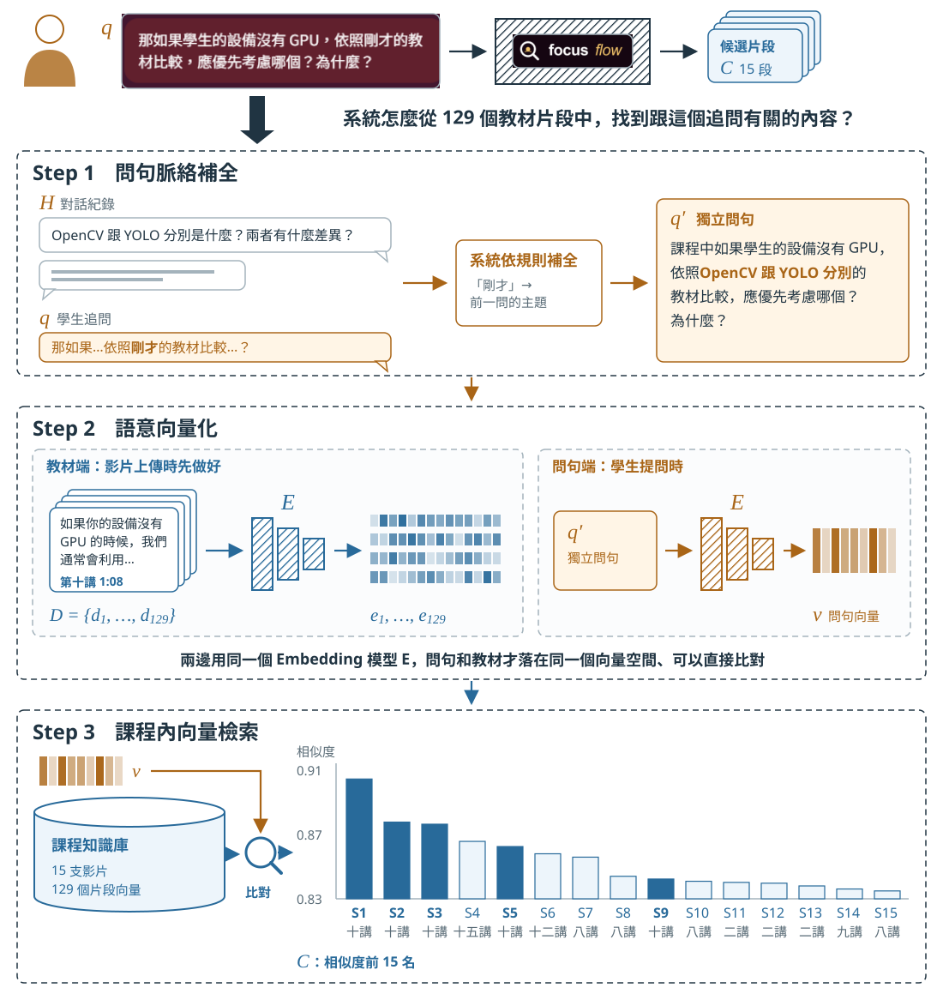
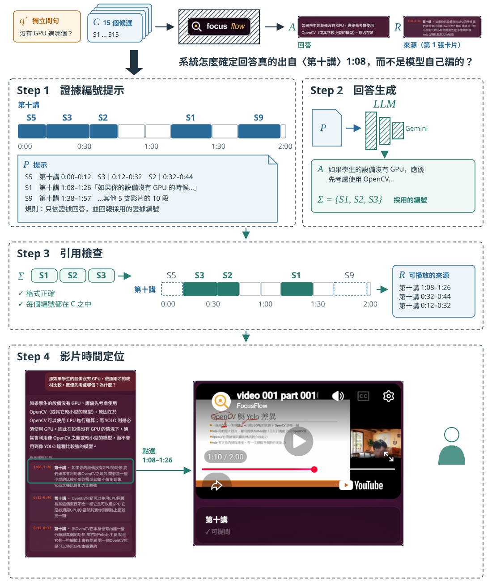
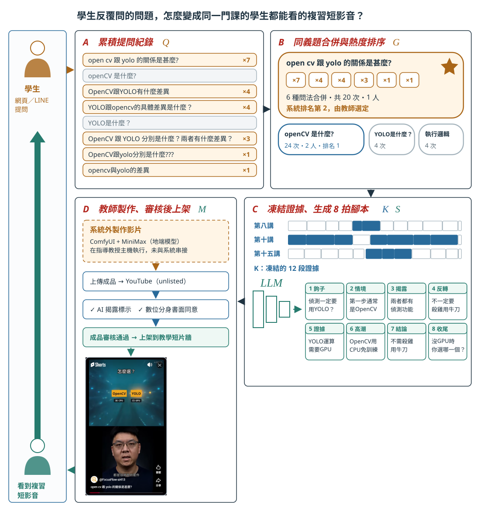

FocusFlow：問題如何轉成有來源的回答
v3.0 審閱版。圖一、圖二是兩張獨立的圖，共用正式環境同一筆真實網頁追問紀錄（2026-09-27）：圖一呈現追問如何找到教材，圖二呈現候選片段如何變成有來源的回答；僅向量色塊為示意。圖三以同一門課一支已上架的真實短影音（2026-09-18）說明反覆出現的提問如何變成複習短影音。
圖 1 學生的追問如何找到相關教材
學生追問「那如果學生的設備沒有 GPU…應優先考慮哪個？」後，系統如何補足問題並在課程中找到候選片段。

資料來源：本研究依 FocusFlow 程式碼與規格整理繪製。圖號為審閱用，尚未編入手冊。
圖 2 候選片段如何變成有來源的回答
15 個候選片段如何組成提示、由模型作答，並只把採用的片段呈現為可跳轉的來源。

資料來源：本研究依 FocusFlow 程式碼與規格整理繪製。圖號為審閱用，尚未編入手冊。
圖 3 反覆出現的提問如何變成複習短影音
學生的提問經同義題合併與排序後由教師選題，系統凍結證據生成 8 拍腳本，教師在系統外製作影片，審核後上架回到同一門課的學生。

資料來源：本研究依 FocusFlow 程式碼與規格整理繪製。圖號為審閱用，尚未編入手冊。